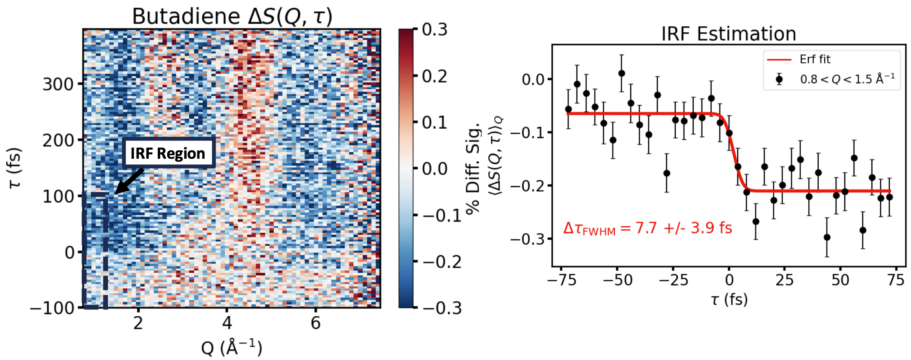

Butadiene — Instrument Response Function

- Difference scattering map $\Delta S(Q, \tau)$ rebinned into 4 fs bins using the arrival-time monitor to correct shot-to-shot timing jitter
- Estimated RDW pump duration < 3 fs; X-ray probe 5–6 fs after filtering for good shots
- Error-function fit to the rise (right) gives a measured $\Delta\tau_\text{FWHM} \approx 7.7 \pm 3.9$ fs